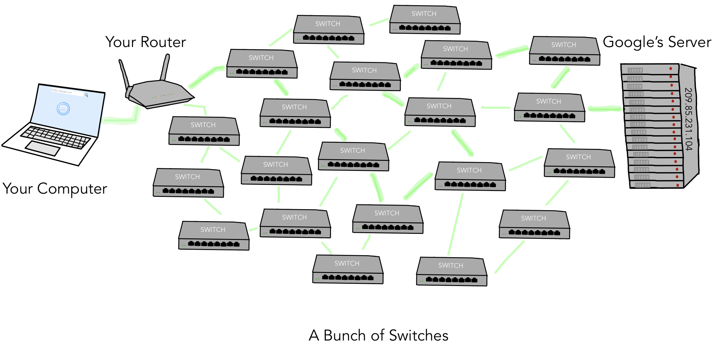

Networks
What is a network?
A network is a group or system of interconnected people or things. For this badge requirement, we will be talking about computer networks (for example, the internet), which are made up of servers, routers, switches, and devices (phone, tablet, laptop, etc).
When you look up a webpage on your laptop, tablet, or phone, you are sending a request to the website's server. When you search for a website, you type in the URL, but that is linked to the website's IP address in the DNS (the domain name server), a bunch of computers that store websites' domain names along with their IP addresses. The DNS is a network itself!
Each device (server, computer, router, etc.) has a unique IP address. An IP address is like a normal address that you use to send a package to someone. Instead of a country, city, state, etc. the IP address has four numbers. The switches use those numbers to pass on the information.
When you send a request, your computer doesn't connect directly to the server. The request passes through multiple switches that lead your request to the correct server.
How is data delivered?
Because there's so much data moving around the internet, some of it's bound to get lost. But when you use a protocol called TCP, you can make sure that it's all there!
Bibliography
- "Wires, cables, and WiFi (video) | Khan Academy," accessed May 9, 2020, https://www.khanacademy.org/computing/computer-science/computers-and-internet-code-org/internet-works-intro/v/the-internet-cybersecurity-and-crime
- "What is the Internet? (video) | Khan Academy," accessed May 9, 2020, https://www.khanacademy.org/computing/computer-science/computers-and-internet-code-org/internet-works-intro/v/what-is-the-internet
- "IP adresses and DNS (video) | Khan Academy," accessed May 9, 2020, https://www.khanacademy.org/computing/computer-science/computers-and-internet-code-org/internet-works-intro/v/the-internet-ip-addresses-and-dns
- "Internet - BrainPOP," accessed May 2, 2020, https://www.brainpop.com/technology/computerscience/internet/
- "Cloud Computing - BrainPOP," accessed May 2, 2020, https://www.brainpop.com/technology/communications/cloudcomputing/
- "Computer network - Wikipedia," accessed May 2, 2020, https://en.wikipedia.org/wiki/Computer_network